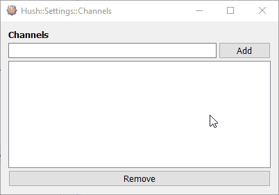
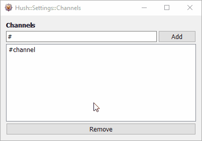

Hush Help::Channels
Setting Channels
Channels in Hush refer to IRC channels that you want Hush to monitor. The software detects if anyone in a channel is offering XDCC packs for download and
will build a database of what is offered. You can find XDCC channels by searching the internet.
To modify your watched channels:
- Open the main Hush window by clicking the Hush button on the toolbar in KVIrc (or press Ctrl+Alt+H)
- Click the Channels button
To add a channel:
- Click inside the text input box and type in the channel name to watch
- Click the Add button or press Enter to save the channel to the watched list

To remove a channel:
- Click to highlight channel names to be removed in the watched list (you can highlight multiple items at the same time)
- Click the Remove button or press the Delete key or press the Backspace key

- Close the Channels window